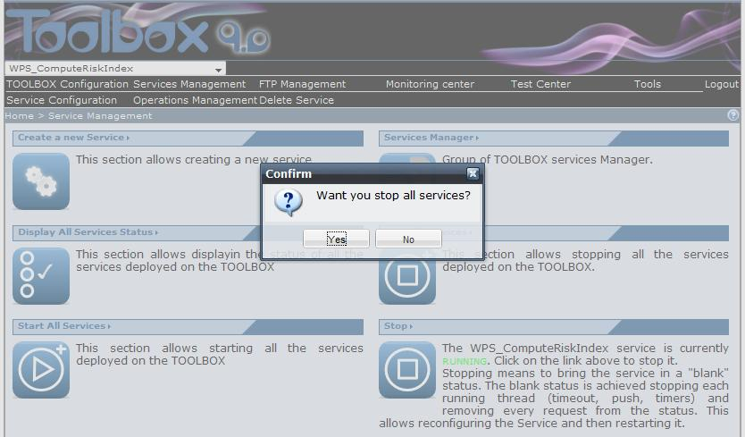

To stop all services click on the "Stop all services" link in the Service Management page and click on the "Yes" button when the browser will show a confirmation message.


Stopping means to bring the service in a "blank" status. The blank status is achieved stopping each running thread (timeout, push, timers) and removing every request from the status. This allows reconfiguring the Service and then restarting it. After pressing this button, the browser should display a page listing all the services installed on the TOOLBOX and their status (which should be stopped, see Manager all services status section).